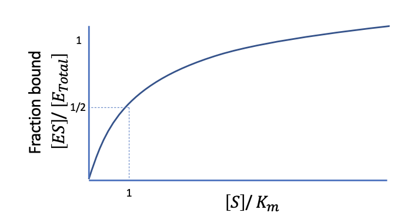
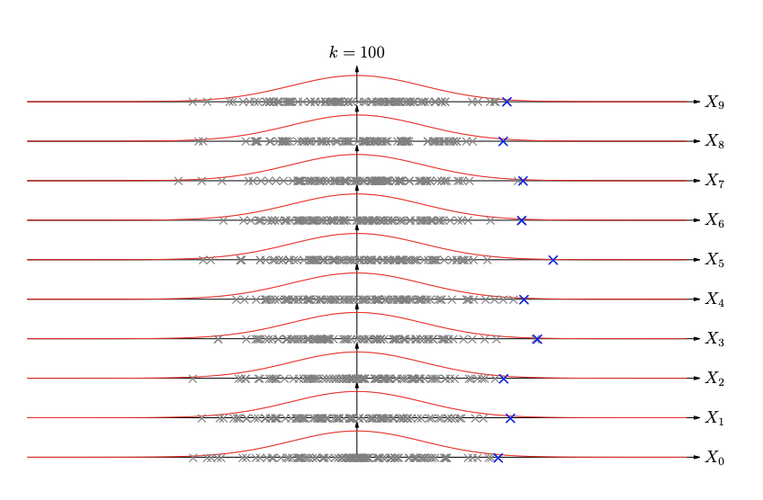

Introduction
Understanding biology is a big data problem.
Large datasets have been created to understand biological systems
DNA
Biology
DNA is a helix of antiparallel chains of nucleic acids, bonded via adenine (A) + thymine (T) or guanine (G) + cytosine (C) bonds
The human genome consists of 64 billion pairs. The majority of which resides in the nucleus of each cell, however, small amounts reside in the mitochondria.
Sequences of DNA which have functional purposes are known as genes.
DNA creates structures called chromosomes, which are held together by histones (a protein). Humans have 23 pairs of chromosomes which reside in the nucleus of each cell. 22 of these are known as autosomes, numbered in decreasing size, and the 23rd are the sex chromosomes (Female is XX, male is XY)
DNA replication follows the process of:
- Helicase enzyme splits the two strands
- DNA polymerase (enzyme) and free nucleotides combine of the two strands
Mutations are alterations of the nucleotide sequence in the genome of an organism, caused by:
- DNA copying mistakes
- Environmental mutagens (e.g. radiation)
- Infection by retroviruses
Mutations consist of three types:
- Point mutations
- Frameshift (insertion or delations)
- chromosomal exchanges/alterations
Transposons are genes which can change position (usually during replication) in the genome. These can create or reverse mutations.
Mutations can be hereditary (germline mutations) or occur during life (somatic mutations). Mutations can have negative, none, or positive benefits.
RNA is a single strand of nucleic acid, the Thymine (T) base in DNA is replaced with Uracil (U) in RNA. RNA strands can associate (match) with single strands of DNA
There are three types of RNA:
- Messenger RNA, synthesised from DNA in nucleus and delivered to Ribosomes, Transcription
- Ribosomal RNA, forms Ribosomes along with proteins
- Transfer RNA, used to create proteins, Translation
Transcription is the process of creating mRNA from DNA. The enzyme RNA polymerase unwinds the DNA into single strands, synthesises a strand of mRNA from one of the DNA strands, and finally recombines the DNA.
mRNA is transported to the ribosomes to undergo Translation which involves synthesising proteins based upon the template of the mRNA. tRNA consists of three nucleotide bases and are connected to an amino acid. The three bases in tRNA then match with sequences in the mRNA, thus the amino acids create a chain based on the sequence of mRNA. This is chain is later folded to create a specific protein.
The mRNA is spliced before translation. mRNA consists of two regions, the introns and exons. The introns are removed during the splicing process and exons combined, yielding sections of the mRNA called the open reading frame which are using in translation, there are untranslated regions either side of the open reading frames.
Codons are the sequence of three nucleic bases that correspond to a specific amino acid. There are specific start (AUG) and stop (UAA, UAG, UGA) codons that indicate when to start and end translation for a specific protein. Codon tables map between mRNA (not tRNA) and amino acids
Genes are sequences of nucleotides which synthesise a specific gene product, i.e. a protein or RNA molecule.
Only 2% of the genome are protein encoding exons
Sequencing
The Humane Genome Project aims to sequence the entire genome, it is mostly finished.
Sequencing the entire genome in one go is impossible, so smaller sequences are used and combined together on overlaps
DNA is sequenced by:
- separating the chromosomes
- Isolating the DNA
- fragmenting into manageable chunks using enzymes
- Inserted into bacteria, which replicates the DNA (Bacterial Artificial Chromosomes, BACS) so there is sufficient concentrations to run the sequencing on.
- Copied DNA is sequenced and assembled into a physical map
- Gene locations are assessed, and genetic map produced
Three methods of sequencing:
- PacBio HiFi: 10-25kb with accuracy >99.5%
- Florescence based
- Illumina: 0.25kb with accuracy >99.9%
- Florescence based
- Oxford Nanopore: 1500kb with 87-98% accuracy
- Electric current based
Reassembling sequences can be challenging as there may be ambiguities when aligning different sequences. Long repeats are especially ambiguous
Tries
A Trie, or digital tree, is often used to store sets of words. In DNAs case there are only 4 letters. Each node is a letter, which branches to the next letter in the sequences. All sequences end with the $ character.
Branches are usually collapsed if there is only one path.
Tries provide a implementation for a set of words which has quick insertion, deletion and find. Making them useful for algorithms used for spell checking, completion, prefix and suffix matching.
With DNA they can be used to correct mis-reads by using known sequences tries and finding a good match. DNA uses a 5 way trie, 4 for the bases and 1 for end of sequence markers
There are many fixed and common sequences which can be used to match and check reads with, such as protein binding (promotor regions), stop and start codons, TATA box, ... Some areas of genes have much higher concentrations of certain bases, making them useful for finding areas of genes.
Tries can be quite memory intensive, Suffix trees can be built to use O(n) memory where n is the length of the text and be constructed in O(n) time
Suffix tries are useful for:
- Applications with multiple searches
- exact words matching is important.
- useful when looking for repeats
Cells
The human body is made of ~\( 3 \times 10^{13} \) consisting of roughly 200 cell types. 90% of the cells are red blood cells so do not contain DNA. The rest contain DNA in the nucleus, with some in the mitochondria (~37 Genes)
Mitosis is the process of cell replication. In which DNA is replicated, the cell is split, and two identical daughter cells are created from the original. The total number of chromosomes is maintained.
Meiosis is the process of creating gametes (e.g. sperm and egg) from a cell. Gametes are haploid meaning there is only one copy of each chromosome, instead of the usual pairs. Meiosis follows a process of replicating DNA, recombining the chromosomes, splitting into 4 gametes
All cells in the body have a function, often the vehicle for synthesising proteins. Proteins can be:
- Enzymes
- Messengers (hormones...)
- Structural
- Transport
- Storage
Proteins get there functions via their various properties:
- folding shape
- size
- polarity
- pH
- hydro properties
Protein folding occurs in the Endoplasmic Reticulum, in addition the Golgi apparatus plays a role in the quality control and recycling, which is needed when they mis-fold.
The cell cycle can be measured by concentrations of proteins in the cell. The time taken to build molecules, transcription, and translation is insignificant to the time taken for protein concentration to change, so we can assume they happen instantaneously
Transcription Networks
Genes are controlled by transcriptions factors which excite or inhibit transcription within a gene.
Transcription factors are made of proteins, thus, genes create a network of signals which can respond to stimuli such as glucose requirements and DNA repair, maintaining the balance of a cell
The set of interactions between genes is known as a transcription network, which are responsible for the fine grained control of a cell. Nodes are genes and arcs represent transcription regulation factors
Transcription networks tell us:
- The genes involved in regulation
- The environmental signals (input)
- The dynamic system present in the cell
- The production rate of proteins
We need to understand how rates and concentrations of molecules change to understand the kinetics of enzyme reactions, e.g. transcription factors
Transcription factors fall under two categories:
- Repressors: binds to promoter region to turn off gene by preventing production of mRNA
- Activator: Binds to promoter region to promote production of mRNA Both of these can bind at the same time
These two factors control the transcription rate of a gene. Arcs are indicated with + (Activator) and - (Repressor) and a number to indicate their input function (e.g. the hill coefficient)
With some understanding of the transcription parameters it is possible to simulate the dynamic processes represented in transcription networks, important for understanding how cells respond to environmental factors.
In reality cell molecules are present in very low concentrations and randomness makes creating a function system problematic
Randomness comes from:
- Extrinsic noise (variations in reaction): difference in number of RNA polymerase, number of ribosomes, size of cell
- Intrinsic noise (inherent randomness)
Chemistry
The concentration of chemicals is given as moles
The rate of a reaction for equation: \( X + 2Y \overset{\rightarrow}{k} Z \) is given as \( \frac{d[Z]}{dt} = k[X][Y]^2 \)
The Michalis Menton kinetics is a simple form of enzyme kinetics, in which enzymes and substrates react to create enzymes and a product. The Michalis Menton equation describes the rate of product formulation based on certain assumptions.
To derive the Michalis Menton equation we start with the equation: \[ E + S \underset{k_{-1}}{\overset{k_{1}}{\rightleftarrows}} ES \underset{k_{-2}}{\overset{k_{2}}{\rightleftarrows}} E + P \] Where:
- E: Enzyme concentration
- S: Substrate concentration
- P: Product concentration
- k: rate of reactions
With the following assumptions:
- The binding step is fast and E+S to ES starts as equilibrium. This means the product formulation \( k_2 \) is rate limiting
- We assume the product starts at zero/little concentration, thus, \( k_{-2} \) can be ignored. The initial rate of product \( V_0 = k_2[ES] \)
- \( E_{total} \) can be given as E + ES
- The previous assumption is true when S is much larger than E total as the fraction that binds to the enzyme is negligible, meaning S is nearly constant.
From the assumptions we get the Rate of formulation equal to the Rate of breakdown, in addition to k-2 == 0. We can write: \[ [E][S] = [ES]K_m;\ K_m = \frac{k_{-1} + k_2}{k_1} \]
Where \( K_m \) is known as the Michaelis Constant
By substituting \( [E] \) for \( [E_{total}] - [ES] \) and rearranging we get: \[ \frac{[E_{total}][S]}{K_m + [S]} = [ES] \]
By plugging into the initial velocity from assumption 2, and assuming that all enzyme will be bound given sufficient substrate (i.e. \(V_{max} = k_2[E_{total}] \)) we get the Michaelis Menton Equation:
\[ V_0 = \frac{V_{max}[S]}{K_m + [S]} \]

From the plot we can see:
- Pseudo-linear when substrate concentration is low
- Reaches saturation at high substrate
- Is half maximal when substrate equals constant
So far MM has assumed there is no repressor or activator
We can use the Hill Function to model the presence of repressors and activators. Which consists of:
- \( K \): the activation coefficient, i.e. the concentration of X required to repress expression
- \( $\beta$ \): the maximal production rate
- \( n \): the hill coefficient
The Repressor Hill function is given: \[ f(X) = \beta \frac{K^n}{K^n + X^n} \]

The Activator Hill function is given: \[ f(X) = \beta \frac{X^n}{K^n + X^n} \]
Where n=1 we have MM dynamics
To model the promotor activity, where:
- D = promoter
- X = repressor
- Kd = off/on
\[ X + D \underset{k_{on}}{\overset{k_{off}}{\rightleftarrows}} XD \]
The total concentration of the promoter is given: \( [D_T] = [D] + [XD] \)
At equilibrium (\( \frac{d[XD]}{dt} = 0 \)) we get \( \frac{D}{D_T} = \frac{1}{1 + [X]/K_d} \) which can give us the promotor activity when multiplied by \( \beta \)
By adding a repressor protein we get \( X_T = [X] + [XS_X] \), At equilibrium we get \[ \frac{[X_T][S_X]}{K_X + [S]} = [XS_X] \] i.e. the MM equation
However, must transcription factors are comprised of repeated sub units, giving us: \[\frac{[nXS_X]}{[X_T]} = \frac{[S_X]^n}{K^n_X + [S_X]^n} \] at equilibrium i.e. the hill equation
In reality both the repressor and activator can bind to the gene at different points within the promotor. Therefore, we need a multidimensional input of both the activator and repressor concentrations
Systems of Equations
The reaction rate of \( 2X + Y \overset{k}{\rightarrow} 3X \) is \( \frac{d[X]}{dt} = k[Y][X]^2 \).
To calculate this in number of molecules we need to divide the concentration by \( \Omega \) which is volume times Avogadros number, giving us: \[ \frac{1}{\Omega}\frac{d[X]}{dt} = k\frac{1}{\Omega^3}[Y][X]^2 \]
We also need to factor in the volume of the reaction area
Gillespie's Algorithm gives us a method of counting the number of molecules over time given a system of equations.
At each time interval \([t, t + dt] \):
- We first calculate the Propensity of each equation, i.e. the probability of a reaction occurring. This is calculated for each equation though the reaction rate times the product concentration times the volume
- We then draw a random time step from an exponential distribution on the total propensity of all the equations
- Next, choose an equation to take place with probabilities based on their proportion of the total propensity.
- Update the number of molecules based on the equation which took place
Gillespies provides the best approximation to the true dynamics within a cell. It is purely numerical so does not provide much insight into how changing the parameters will change the dynamics.
It is often used to check the validity of other models such as ODEs and Monte Carlo
However, computers are not fast enough to truly simulate chemical reactions. Chemical reactions can happen orders of magnitude faster, we may need to approximate or assume a quasi-equilibrium.
Sequence Matching
Sequence matching is useful for:
- Finding similarity in Protein/DNA between related species
- Transfer knowledge about known sequences to new sequences
- Compare sequences with other species, although need to know which part of the sequence to match
To reassemble sequences after sequencing, we need to find best matches at both the DNA and Protein levels
Mutations in proteins are more likely to have adverse effects than DNA, meaning they are more highly conserved. This means they are unlikely to change between generations, species, or even kingdoms. DNA mutation are les conserved as the often have no effect
Some coding sequences are so important they are conserved in all living things, i.e the coding for proteins used in transcription and translation. All inherited from the universal common ancestor.
Some amino acids are more similar to each other, meaning they have a higher chance of being substituted with each other.
BLOSUM 50 is a data set of substitution rates, using known alignments it is calculated by:
- Eliminating sequences with higher than a given similarity
- Calculating frequency of pairs of amino acids
- Calculate the ratio of occurrence of each amino acid combination.
- Calculate log odds of each pair, i.e. how often they occur as a pair compared to how often then would be expected if independent: \[ 2\log_2(\frac{P_{ab}}{P_aP_b}) \]
The BLOSUM 50 table can be used to look up the probability of the \(i\)th amino mutating to the \(j\)th amino acid
It is also a possibility that there could be a gap, i.e. a insertion or deletion.
As there is an infeasible number of possible inexact matches to check, so we use dynamic programming to build up an optimal set of partial solutions until we have a solution for the entire string. Each step builds upon the previous optimal solutions. Dynamic programming reduces the complexity from O(\(2^n\)) to O(\(n^2\))
Exact Methods
Needleman-Wunsch is an algorithm for computing global alignments between two strings.
- BLOSUM 50 is used for substitution costs, a to b
- Linear cost (d = -8) is used for insertion and deletion
We use the costs to build up a cost matrix \(F\) where each cell (n, m) gives the best alignment for strings \(a_{0:n} \) and \(b_{0:m}\). The top left is the start, which is filled with 0. This is done recursively with the equation: \[ F_{i, j} = \max \begin{cases} F_{i-1, j-1} + S_{a_i, b_j} \\ F_{i-1, j} + d \\ F_{i, j-1} + d \end{cases}\]
Corresponding to substitution, a gap, b gap respectively.
At each cell a pointer is kept to indicate which previous state the cell came from (i.e. the action used). After the table is filled we start at the bottom right and follow the back pointers to find the best alignment.
NW global matching has a time complexity of O(A size x B size) which is not an issue. The main problem is it has the same space complexity making it a problem for long sequences.
Hirschberg is another global matching algorithm which recursively splits up the string making it have linear space complexity. Is still quadratic in time, but in practise tends to take twice as long as NW
Smith-Waterman is an algorithm for local matching, finds the best aligned substring within two strings.
It is very similar to NW, with the added option of ignoring an operation for a cost of 0: \[ F_{i, j} = \max \begin{cases} 0 \\ F_{i-1, j-1} + S_{a_i, b_j} \\ F_{i-1, j} + d \\ F_{i, j-1} + d \end{cases} \]
The table is filled in the same way, using back pointers to the previous cell if the operation wasn't ignore.
Once it is filled, we start from the highest value in the table rather than the last value, and follow the points until we reach a 0 to find the local alignment.
To deal with multiple best matches, caused by repeats of one region within another, smith-waterman can be adapted.
Both NW and SW use linear gap costs, i.e. each site is independent. This is problematic as in reality mutations can occur in sequences.
To fix this we add an affine (linear, i.e. y = mx +c) gap cost function evaluated over all previous possible gap sizes: \( \gamma(g) = -d - e(g-1) \). d=12 and e=3 gives a good model which penalises all gaps but larger slightly more punished.
To implement this however, three matrices are needed. It is easier to visualise these using finite state automata, where the states are the matrices and arcs are the operation costs
Approximate Methods
Proteins we have chains of 100s of amino acids, meaning the quadratic time of these algorithms is possible, but slow.
DNA however is 10^5 to 10^11 bases long, meaning quadratic time is not feasible. To achieve this we need approximate methods
FASTA is a heuristic method that finds candidate subsequences for alignments. Smith-waterman is then used of the subsequences. It has however been superseded by BLASTA
BLASTA is another heuristic method which:
- filters out low complexity regions or repeated sequences
- make k-letter exact matches word list from the sequence
- evaluates of significant matches
- Combines high scoring matches to find gapped regions.
- Finishes off with Smith Waterman
The find the significance of a match, i.e. the probability of a match given sequences a and b we can use the logistic equation on the probabilities:
\[ P(M|a, b) = \sigma (\log\frac{P(a, b|M)}{P(a, b|R)} + \log\frac{P(M)}{P(R)}) \]
Another approach is finding the likelihood of a particular score being random rather than a match is to use extreme value distributions.

Where we sample multiple distributions, and take the most extreme value of each distribution to create an extreme value distribution.
EVDs are more accurate the longer the string.
Hidden Markov Models
TBC
Population Dynamics
TBC:
Evolutionary Trees
TBC:
Boolean Networks
TBC